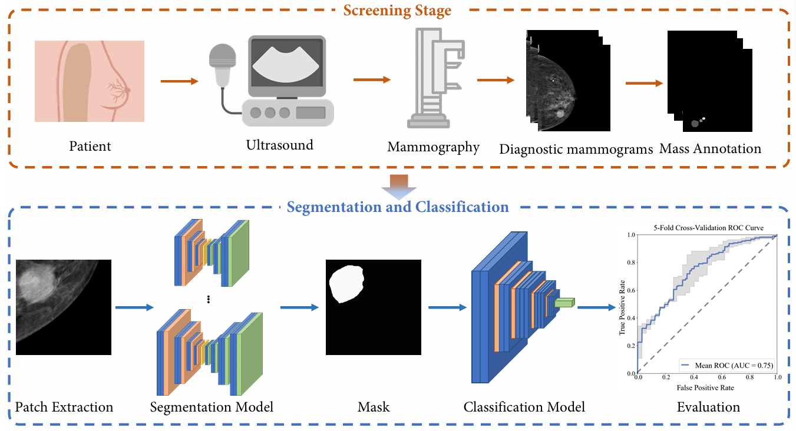

😊 I am looking for a PhD position. Please feel free to contact me. Thank you very much!
News
- [2024.02] One paper is acceptted by IEEE ISBI 2024 (link)!
Research Interest
I am working in AI for Medical Image. Currently, I focus on the following research topics:
- Improve Diagnosis of Mammographic Calcifications
- Medical data analysis
- Unsupervised learning
My research aims to design creative machine learning and computer vision approaches to better contribute to Medical image fields such as aid diagnosis, cancer detection,.
Education
Publications
Conferences:
|  |
[1] PERFORMANCE ASSESSMENT OF MALIGNANT MASSES DETECTION FROM DIAGNOSTIC MAMMOGRAPHY
Guanghao Sun, Lifang Si, Jialin Hou, Qi Yang, Yong Liu and Hou Rui,
Proceeding of IEEE 20th International Symposium on Biomedical Imaging (ISBI 2024), 2024. (EI)
[Paper]
|
Awards and Honors
- 2019.09, The Second Prize, National Undergraduate Electronics Design Contest | 全国大学生电子设计大赛二等奖
- 2019.09, The Second Prize, The Chinese Mathematics Competitions | 全国大学生数学竞赛二等奖
- 2019.09, The Second Prize, Undergraduate Mathematical Contest of Shandong Province | 山东省大学生数学竞赛二等奖
- ...
Copyright © 2024 Guanghao Sun (since 2024).
Last updated in Oct, 2024.